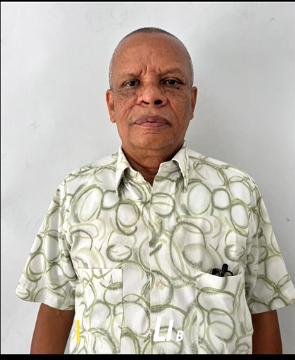
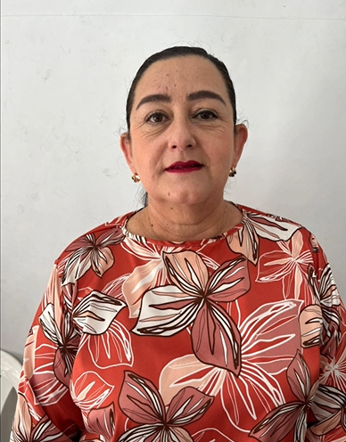
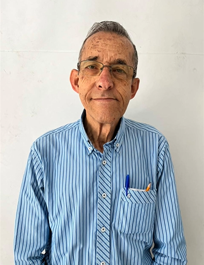
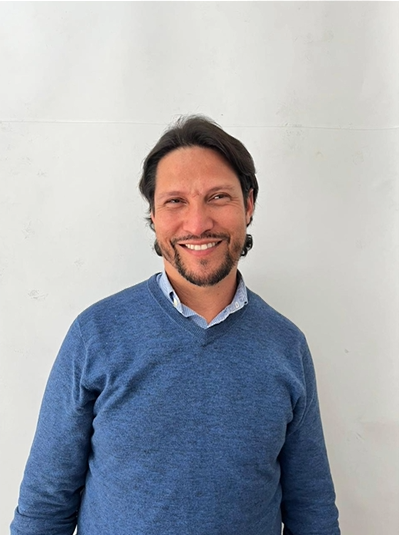
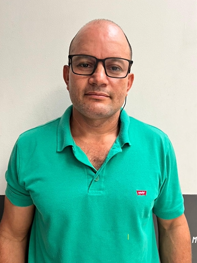
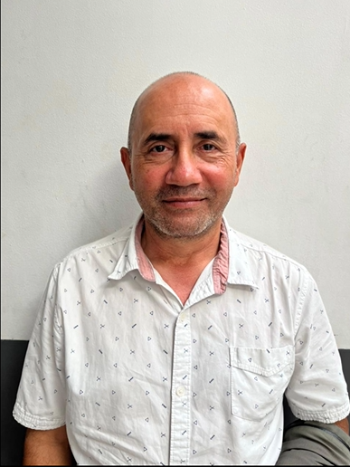

Nuestra Historia
La Asociación Confraternidad Carcelaria de Risaralda (ACCR) es una organización conformada por cerca de 30 iglesias distintas y más de 60 voluntarios. A través de su ministerio, la ACCR ha liderado procesos de transformación social en el departamento de Risaralda, impactando las vidas, las familias y las realidades de quienes, hasta el momento, así lo han permitido.
Nuestra Misión
Servir a la comunidad con realidad carcelaria y a las víctimas de la violencia en el departamento de Risaralda, con el propósito de contribuir al bienestar integral, a la paz y a la justicia social, basados en principios bíblicos y valores éticos cristianos.
Nuestra Visión
La Asociación Confraternidad Carcelaria de Risaralda será una entidad reconocida que aportará al bienestar integral de la comunidad con realidad carcelaria y de las víctimas de la violencia en el departamento de Risaralda.
Nuestra Estructura
La Asociación está liderada por un equipo comprometido con la transformación social y la defensa de la dignidad humana.
Junta Directiva

Libardo Quebrada

María Aydée López

Yormari Ríos

Duvier Román

Jairo Hoyos
Vocales

Alexander Amado

Marcos Arredondo
